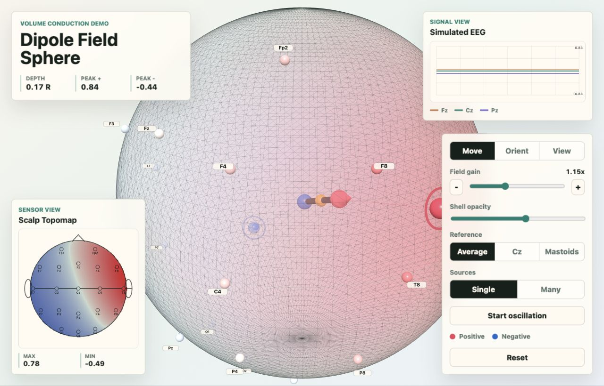

Many neurons align
EEG is most sensitive when many similarly oriented neurons are active together, creating a field strong enough to reach the scalp.
Chapter 1
EEG does not record neurons directly. It records tiny voltage differences at the scalp after electrical fields from synchronized brain activity spread through the head.
Open the Dipole Field Sphere demoCore idea
Volume conduction is the passive spread of electrical current through conductive tissue. In EEG, the source is usually modeled as a dipole: one side is relatively positive and the other side is relatively negative.
As the field travels through brain tissue, cerebrospinal fluid, skull, and scalp, it becomes broader and weaker. By the time it reaches electrodes, one neural source can affect many sensors at once.

The path
EEG is most sensitive when many similarly oriented neurons are active together, creating a field strong enough to reach the scalp.
Conductive layers spread current outward. The skull resists current more than brain tissue, which makes scalp patterns smoother than the underlying source.
Each EEG channel is a voltage difference between an electrode and a reference, so changing the reference can change the plotted scalp pattern.
Why it matters
A scalp topomap shows the voltage pattern measured across electrodes. It is a surface summary of the field, not a direct map of where activity began inside the brain.
Different internal source arrangements can produce similar scalp voltages. This is why EEG source localization is an inverse problem: the scalp pattern gives clues, but there is not one unique source solution without extra assumptions.
Move the dipole, change its orientation, switch reference modes, and enable many sources. Watch how the same sensors report a broad voltage pattern rather than a pinpoint source.
Launch interactive demo